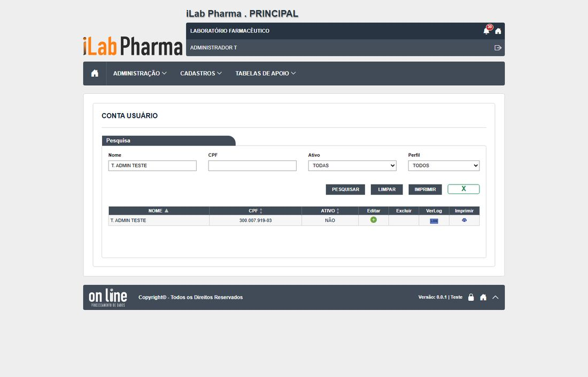
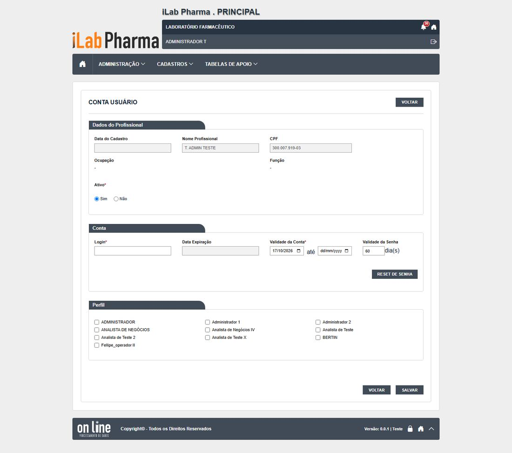

Menu: Administração · Situação na versão nova: Testada · Endereço: /contas-usuario · Tela equivalente no legado: administracao/usuario_conta_lst, _ed, _rel (Falha grave (DV-PRI-003, DV-PRI-005, DV-PRI-017))
Em uma olhada
| Casos executados | Igual | Regressão | Melhoria | Novo | Bloqueado | Defeitos listados |
|---|---|---|---|---|---|---|
| 5 | 4 | 0 | 1 | 0 | 0 | 4 |
Classes: Igual (mesmo comportamento do sistema entregue, inclusive a falha), Regressão (piorou), Melhoria (falhava e agora funciona), Novo (o sistema entregue não tinha resultado) e Bloqueado (não deu para executar).
O que a tela faz
Conta de acesso do profissional: login, validades, situação e perfis. Não tem o botão Incluir (como no legado): a conta é preenchida editando o profissional.
- Login duplicado é recusado: "Já existe um usuário cadastrado com esse login." (sem o nome do dono).
- Conta sem perfil: o servidor devolve "Perfil inválido." (o legado dizia "O perfil do usuário é obrigatório!").
- Validade final menor que a inicial é recusada.
- Adicionar e retirar perfis exige justificativa e fica no histórico ("NOVO PERFIL", "PERFIL EXCLUÍDO"). Cada gravação acrescenta uma linha de ruído "RESETAR SENHA SIM → NÃO".
- A caixa de perfis mostra só os 10 primeiros, também na edição da conta.
- O Reset de senha pede confirmação, não pede justificativa e vale na hora, mesmo sem clicar em Salvar. A senha provisória vale 60 dias na criação e 5 dias depois do reset.
- Excluir a conta exige justificativa; o servidor recusa sem ela, mas a tela só fecha a pergunta, sem mensagem.
Como a tela é


Resultado dos testes
| Caso | Cenário | Legado | Versão nova (o que a tela mostrou) | Classe | Defeito |
|---|---|---|---|---|---|
| CT-PRI-042 | Login duplicado | Passou | "Já existe um usuário cadastrado com esse login." | Igual | — |
| CT-PRI-043 | Conta sem perfil | Passou | "Perfil inválido." (mensagem menos clara) | Igual | — |
| CT-PRI-046 | Adicionar e retirar perfil; ver o histórico | Passou (DV-PRI-005) | Exige justificativa; histórico com NOVO PERFIL e PERFIL EXCLUÍDO e a linha-ruído de reset | Igual | DV-PRI-005, N-006 |
| CT-PRI-049 | Excluir conta sem justificativa | Passou | O servidor recusa (400), mas a tela só fecha a pergunta, sem mensagem | Igual | N-003 |
| RG-PRI-006 | Desbloquear um usuário bloqueado | Falhou (DV-PRI-016) | O Reset de senha feito pelo administrador desbloqueia o usuário (veja também a tela de Login) | Melhoria | — |
Evidências (capturas): CT-PRI-042, 043, 046, 049 e RG-PRI-004 a 007 (rodada 2). As capturas ficam na pasta evidencias/ de cada rodada.
Defeitos e pontos de atenção
| Defeito | Gravidade | O que acontece |
|---|---|---|
| DV-PRI-003 | Média | A senha provisória aparece em texto na janela do administrador e é gerada no navegador. Persiste, de forma mais grave. |
| DV-PRI-N-006 | Média | A caixa de perfis da conta mostra só 10 perfis (confirmado e agravado na edição). |
| DV-PRI-N-019 | Média | O histórico da conta não traz a troca de senha feita pelo próprio usuário nem os bloqueios por tentativas. A confirmar com o DBA. |
| DV-PRI-005 | Baixa | Linha de ruído "RESETAR SENHA SIM → NÃO" em cada gravação. |
Para quem desenvolve
- Mostrar a mensagem de erro do servidor ao excluir a conta sem justificativa (N-003).
- Exigir justificativa no Reset de senha e registrá-lo no histórico (DV-PRI-017).
- Listar todos os perfis (N-006) e mostrar a mensagem "O perfil do usuário é obrigatório!" antes de chamar o servidor.
- Registrar no histórico da conta toda troca de senha e todo bloqueio (N-019; requisito RF-PRI-024).
Para quem testa (QA)
- A conta nasce com o profissional: veja "Usuários de teste" para os 12 logins
t.*. Os perfis de teste têm prefixo0.T.por causa do limite de 10. - Quatro usuários (
t.admin,t.consulta,t.cadastro,t.semadmin) têm senha fixa de teste; os outros precisam de Reset de senha pelo administrador.
Para a gestão
- É a tela que dá permissão a cada pessoa. Falta registrar o motivo do Reset de senha e as trocas e bloqueios, que são eventos de acesso que a norma espera rastrear.
O passo a passo para homologar esta tela está na página seguinte.